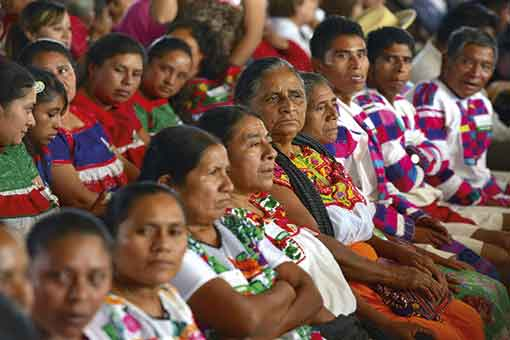
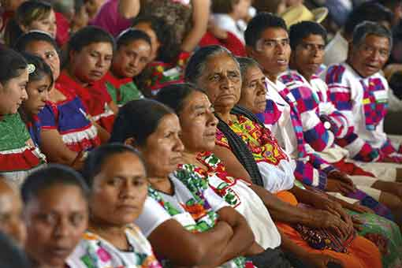
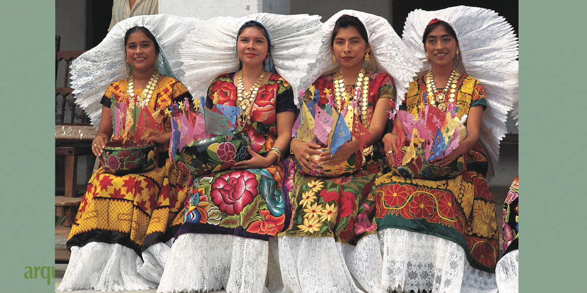
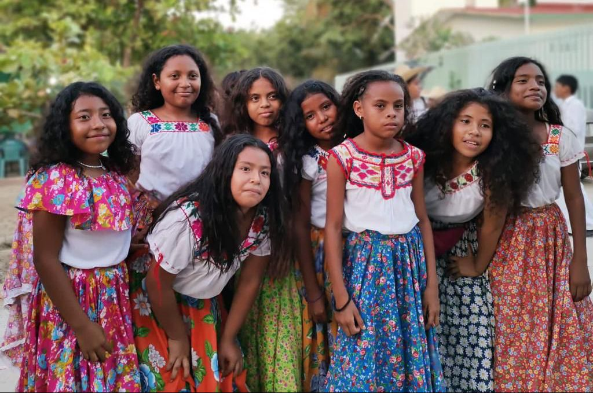
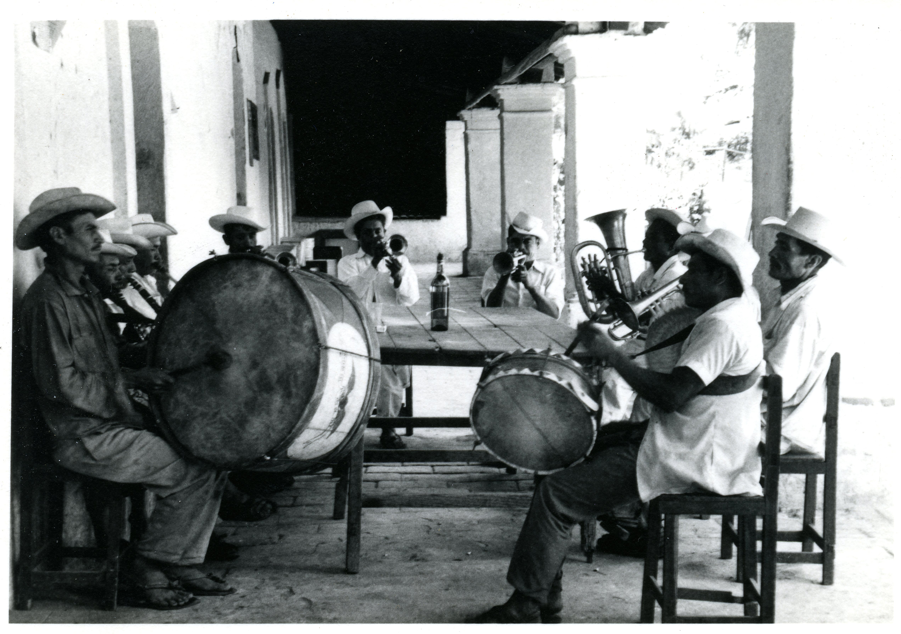

Grupos indigenas
Oaxaca es el hogar de numerosos grupos indígenas, incluidos los zapotecas, mixtecas, chinantecas, mixe, triqui y mazatecas. Estos grupos han conservado sus propios idiomas, tradiciones y costumbres durante siglos.
Oaxaca es el hogar de numerosos grupos indígenas, incluidos los zapotecas, mixtecas, chinantecas, mixe, triqui y mazatecas. Estos grupos han conservado sus propios idiomas, tradiciones y costumbres durante siglos.
La mayoría de la población de Oaxaca es mestiza, lo que significa que tienen ascendencia mixta española e indígena. Los mestizos han contribuido a la cultura del estado a través de su música, danza y gastronomía.
Oaxaca también tiene una pequeña población afromexicana, particularmente en la región costera. Tienen su propia cultura distinta y han contribuido a la música, la danza y la cocina del estado.
Los artesanos de Oaxaca son conocidos por sus artesanías tradicionales, que incluyen textiles, cerámica y tallas en madera. Utilizan técnicas que se han transmitido de generación en generación y su trabajo a menudo se vende en mercados y tiendas locales.
Oaxaca tiene una rica tradición musical, con géneros como banda, marimba y son istmeño. Los músicos suelen tocar en festivales, bodas y otros eventos culturales.
